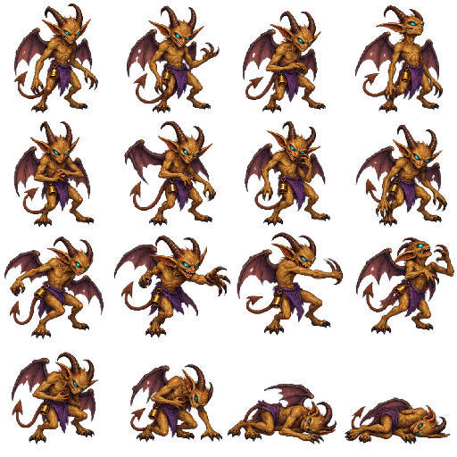

WITCHES MIRROR GAMES · PHASE 20World of Maxxia · Art Production Proof
Original full-colour fantasy raster art, fitted to the existing 640 × 400 dashboard. This review surface plays the production assets without changing any adventure save. Return to game
Dust Imp
Eight idle frames · three attack frames · one hit frame · four collapse frames.
128 × 128 frame; ground anchor (64, 123). Single-shot clips hold their final pose here for inspection.
Tessa Bell · The Silver Lantern
A four-frame idle loop with a long open-eye hold, short blink, and returning smile. In the game, visit the tavern at (4,11) and press Space; food, rooms, rumors, banking and the roster retain their controls.
Witch portrait · selection 6
58 × 70 pixels each. This replaces existing portrait index 5, including the default Witch. All twelve portraits are now complete; see the Phase 21 interface and portrait gallery.
Complete production atlas

Rows 1–2: idle. Row 3: anticipation, claw strike, follow-through, hit. Row 4: collapse sequence. These are original assets; the supplied Xeen sheets were timing and style references only.